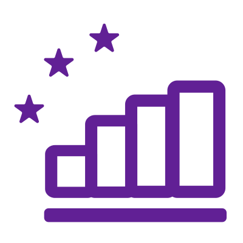
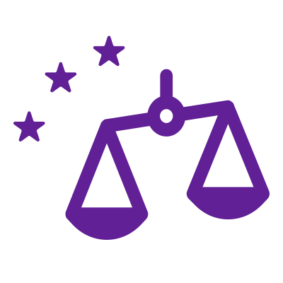
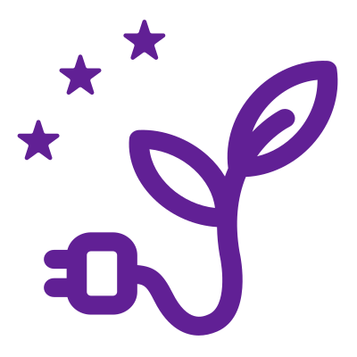
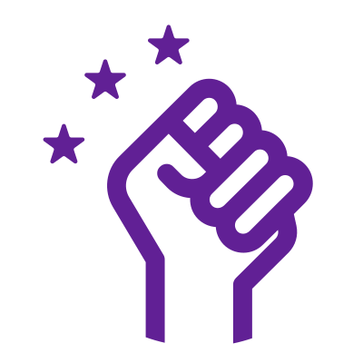
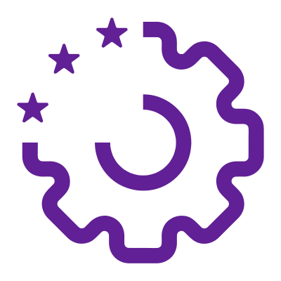

Our challenges
Volt defined 5+1 fundamental challenges that need to be tackled in each European country and Europe as a whole. Why 5+1? 5 challenges will be adapted to the national level to take into account local realities. The +1 challenge – our proposal to reform and strengthen the EU – will be identical across all our national programmes.
1. Smart State
Governments should provide high-quality public services for the benefit of their citizens and residents. Smart States must therefore continuously adapt to provide state-of-the-art public services in areas such as education, health care, and justice, to ensure social inclusion and equal opportunities. At the same time, new tools allow governments to increase their administrative effectiveness, fight corruption and earn their citizens' trust through accountable and transparent governance.
2. Economic Renaissance
European economies need to become the engine of society’s progress and allow for a decent living standard for all. For this, we established 3 key levers: rebuilding economically challenged areas, fostering leadership in innovation, and pushing for the EU to become a ‘Social Union’. This requires innovative policies to reduce bureaucracy, tackle unemployment, revive innovation, invest in smart & sustainable productivity and trade, and create a unified European social and fiscal system.
3. Social Equality
Today no one should still be left behind. Everyone in Europe has to be guaranteed equal rights and opportunities, and human rights need to be respected, applied, and upheld! To achieve this aim, we are introducing groundbreaking and holistic policies that tackle all types of inequalities and discrimination, that aim to alleviate poverty, to include everyone in society and provide access to basic needs, and that emphasize a person’s right to their own body.
4. Global Balance
In today's interconnected world, and given the recent developments in the international policy arena, Europe needs to assume responsibility for its role in global challenges. These challenges include topics such as climate change, international fair trade, sustainable farming, food security, biodiversity, migration issues, and international development cooperation. This Challenge seeks to establish policies in line with the Sustainable Development Goals.
5. Citizen Empowerment
Europeans should be empowered to take informed political decisions, be able to influence politics beyond elections alone, and exercise their democratic rights within vibrant, resilient and highly deliberative democracies. Our policies are based on best practices regarding the fostering of a pluralistic information and media landscape, tools & technologies for political engagement and empowerment, and ways in which democracies can be made to thrive.
+1. EU Reform
The European Union is our common project: we have managed to come together and build a Union that has ensured peace and prosperity for over sixty years. Yet, it has its shortcomings, which is why we want to reform and strengthen EU governance and institutions for a more democratic, more transparent and stronger Europe, a federal Europe; and we propose concrete policies for more efficient EU action to promote and protect the interests of all European citizens.